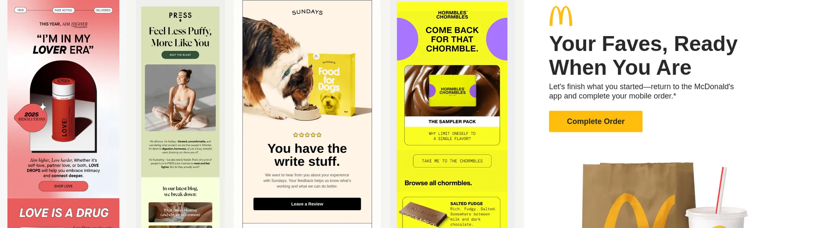
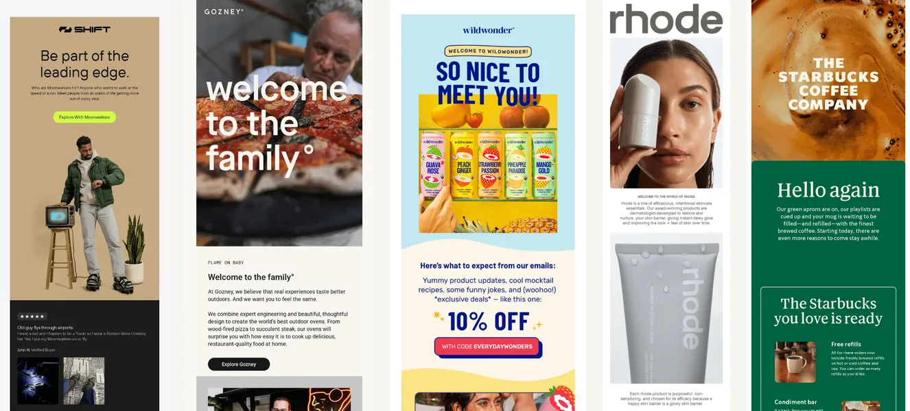
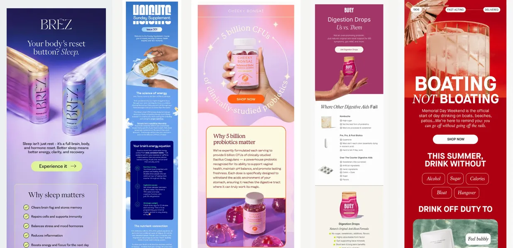
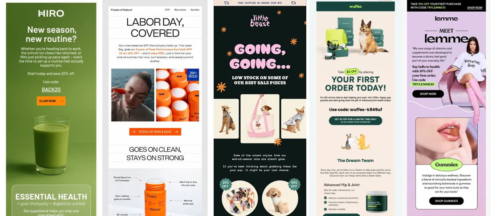
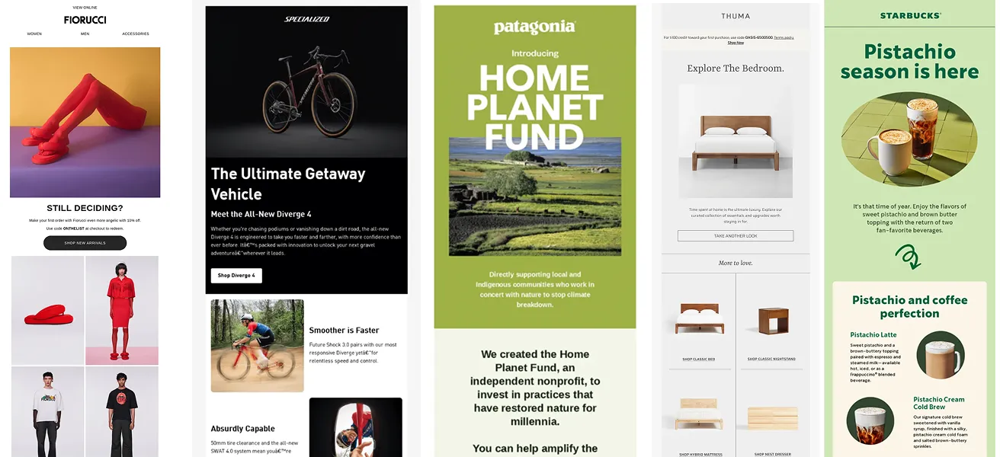

This is not a report. This is a field guide.
Every year, we gather the top 100 emails and do the digital equivalent of sitting on the floor, surrounded by printed screenshots, asking ourselves: What are these things trying to tell us about humans? These are the emails people didn’t just open and forget. They saved them. They reread them and lingered on their meaning. They forwarded them to colleagues.
Importantly, these weren’t just the emails that spiked at the end of the year when everyone was underslept and desperately trying to ship something before Q4’s weight broke them. These were the emails that held attention all. year. long.
And after looking at the most popular emails of 2025, one thing became very clear, very fast: last year marked a real shift away from cliché campaigns and toward emails that felt like they actually understood the person reading them.
Below are the patterns that showed up again and again across industries, brand sizes, and business models. There are definitely more, but this is our first stab. And yes, they’re rooted in consumer psychology. No, you don’t need a minor in behavioral science to enjoy them. They’re expressed in ways that feel good to read (which, it turns out, is the entire point).
Trend 1. The “noticing” effect: emails that start where the reader is
A striking number of the top emails didn’t announce anything. They didn’t open with “Big news.” They didn’t introduce themselves like a TED Talk. They didn’t put the brand in the spotlight and ask the reader to applaud politely.
Instead, they did something much more effective.
You see it immediately in subject lines and opening moments like “Can’t decide?”, “So close, yet so far,” “You got this,” and even in “Feeling a bit bloated?” These emails don’t reset the conversation. They assume one is already happening — quietly, inside the reader’s head.
Psychologically, this taps into self‑relevance bias. Humans are remarkably good at ignoring things that aren’t about them. When an email mirrors an internal thought the reader is already having, it doesn’t have to fight for attention because it has already been invited in.
Now compare that to emails that solve a similar problem but fall into what I lovingly call the we‑we trap: “We may have missed this,” “We noticed you had your eye on this,” “We saw you checking us out.” These aren’t offensive. They’re just centered on the wrong protagonist. They remind the reader that the brand is watching, rather than acknowledging that the reader is thinking.
The best emails of 2025 avoided that entirely. Visually, they doubled down on restraint to help that thoughtfulness linger: generous white space, one clear image, calm typography. Nothing can compete with the moment of being acknowledged. They weren’t trying to convince you of anything that you weren't probably thinking about already.
This is why the noticing effect sets the tone for every other trend in this list. Orientation beats interruption. Recognition beats persuasion. Once someone feels seen, everything that follows (education, reassurance, even an offer) lands with dramatically less friction.
If you steal only one idea from the best emails of 2025, make it this: before you write an email in 2026, ask yourself what the reader is already thinking. The closer you get to that answer, the less work the email has to do.
Trend 2. Welcome emails became emotional orientation, not instruction manuals
There are a lot of welcome emails in this year’s top list, and almost none of them start with onboarding steps. No checklists. No “Step 1, Step 2, Step 17.” There are no subtle implications that the reader should clear their afternoon.
Instead, they start with identity. “Welcome to the family.” “So glad you’re here.” “You’re in.”

This aligns neatly with commitment and consistency theory. Once someone signs up, the psychological job is no longer persuasion. It’s reassurance. People want confirmation that they made a good decision, not a pop quiz.
That’s why the strongest welcome emails lead with an impactful, reinforcing image, delay feature explanations and progress bars, and feel more like a handshake than a tutorial. The tutorial can come later, once everyone has emotionally sat down.
Think of it this way: a good welcome email is less like being handed an IKEA manual the moment you walk into someone’s house, and more like someone taking your coat, pointing at the couch, and saying, “You’re good. Make yourself comfortable.” No one wants to be quizzed on silverware placement before they’ve even found a place to sit.
The best welcome emails answer the unspoken question first — “Did I make the right choice?” — before asking the reader to learn anything new. For large companies with complex products, this isn’t just nice. It’s essential. Cognitive load is real. Orientation before education reduces friction and regret.
Trust first. Instructions later.
Trend 3. Health and wellness emails acted like translators, not authorities
Health and wellness emails dominated the list in 2025 — but not in the way they used to. Instead of credential‑stacking or vaguely invoking doctors who may or may not exist, the strongest emails helped readers understand the problem before introducing the product.

Subject lines like “Still think kombucha’s good for your gut?”, “Why sleep matters,” and “Your brain is hungry” didn’t talk down. They invited curiosity.
This works because of psychological reactance. When people feel talked at, they resist. When they feel guided, they lean in. The best emails didn’t try to win an argument. They tried to make the problem legible.
Visually, these emails stayed calm without feeling clinical. Soft gradients. Simple diagrams. Minimal charts. Copy that explains instead of proves. The message wasn’t “Trust us.” It was “Let’s make this make sense together.”
Trend 4. Discounts stopped leading
Yes, there were promos. Yes, there were countdown timers. Yes, Black Friday emails continue to haunt us year‑round like a ghost that refuses to move on.
But rarely did a massive discount lead the email.
Instead, the pattern looked like this: context → reassurance → value → then the offer.
You can see it clearly in emails where the subject line never mentions a deal, but a discount still exists — just not up front. Emails like “Welcome to the world of Rhode,” “A wild and wonderful welcome,” and “Your back‑to‑school sidekick is here” lead with belonging or usefulness first. The incentive shows up later, like a polite bonus instead of a foghorn.

Even in overtly promotional emails — “Flash Sale: 25% Off Matcha Kits,” “15% Off — Start Shopping” — the design rarely panics. The hierarchy stays calm. The visuals don’t scream. The discount feels like a nudge, not a threat.
Psychologically, this works because decision justification and loss aversion are tag‑teaming the moment. Once someone feels aligned with the product, the discount becomes permission — a socially acceptable reason to move forward without feeling manipulated. The offer doesn’t create desire. It resolves tension that was already there.
This matters even more during holidays. Despite what we tell ourselves, people aren’t actually hunting for discounts. They’re hunting for confidence. The discount is just the receipt they show their own brain afterward.
By the time a seasonal event rolls around, inboxes are already saturated with urgency. Everyone is shouting the same numbers, using the same language, and counting down the same clocks. Readers worry about choosing the wrong thing, missing a better deal, or buying something that won’t live up to the moment. Leading with a discount doesn’t solve that anxiety. Reassurance does.
The emails that won in 2025 lowered the emotional temperature first. They helped readers feel oriented and understood, then introduced the incentive as a safety net. The discount wasn’t the headline. It was the permission slip.
In a crowded holiday inbox, certainty beat a bigger number every time.
Trend 5. Low‑friction, high expression
Across almost every category, the visual language converged on something more precise than "calm." What actually won the inbox in 2025 was low friction paired with high expression.
These emails weren’t quiet and they weren’t minimal for minimalism’s sake. And they definitely weren’t boring. They were playful, adventurous, occasionally weird — but never stressful.

That distinction matters. You don’t see brutalism dominating this list. You don’t see chaotic collage layouts or dense, everything-at-once visual storytelling. You don’t see hand-drawn comics with a bunch of colors that remind you of sitting in front of the Saturday morning TV. Not because those styles are bad, but because they increase cognitive friction. They ask the reader to work harder before they understand what’s happening.
Instead, the best emails made a very specific tradeoff: expressive within a controlled system.
Hierarchy was clear. One main idea per screen. Color was intentional, not sprayed. Off‑white, cream, warm gray, and soft earth tones showed up frequently as the canvas, while bolder colors were used surgically — often once — to guide attention rather than demand it.
Whitespace did real work here. Large margins, generous padding, and one idea per viewport reduced cognitive load and gave readers a sense of control. Dense layouts feel like obligations. Spacious ones feel optional — and optional things invite curiosity.
This is why these emails could afford to be fun. Low friction creates the conditions for play. When nothing feels urgent or confusing, expression reads as confidence instead of chaos.
In other words, the best emails of 2025 didn’t suppress personality. They made room for it.
The big takeaway
The best emails of 2025 didn’t try to win attention. They earned it by being situationally aware, emotionally literate, and surprisingly patient. They behaved less like campaigns and more like thoughtful follow‑ups.
Which, honestly, might be the most scalable strategy of all.
More examples. More patterns. More inbox anthropology. Always at Really Good Emails.